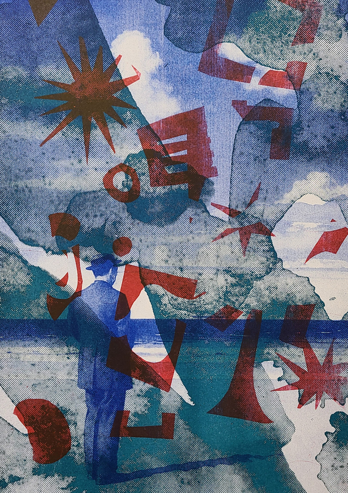
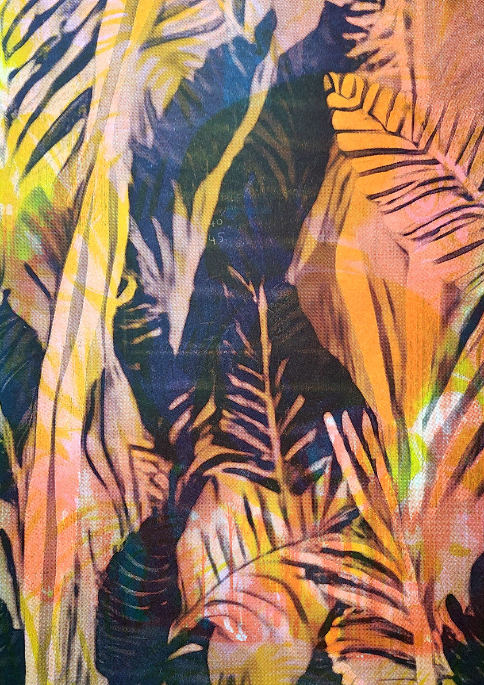

// COPIE D'ESSAI
These are test prints, consistently A3-sized sheets of paper exclusively employed by the Off The Press workshop for calibrating the RISO machine with each new print. In an exploration of randomness and diversity, they undergo sorting, selection, and reuse. Reprinted at will, these prints haphazardly intertwine the various color layers of images produced in the workshop. They represent the outcomes of emotions translated into action and choices. Each particle is a print, distinguished by a unique number, providing the buyer access to the "CHROMATIC" experience. Stay informed and subscribe for ongoing updates.
To query a test print, please contact me : nil@nl-pk.com

